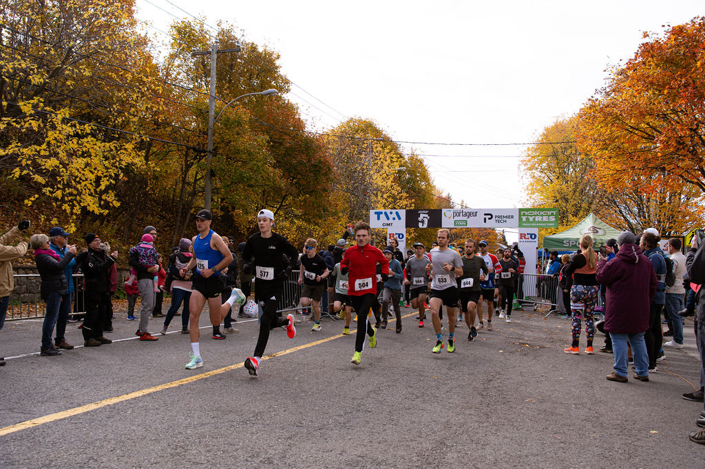

Inscrivez-vous à la 17ième édition de la Course du Portageur. Quatre parcours en bordure du fleuve Saint-Laurent à Notre-Dame-du-Portage.
Choisissez votre distance
Tous nos parcours sont en aller-retour, sur route asphaltée et généralement plats. Départ et arrivée au même point.

L'évènement
Toujours à l'honneur, les parcours de 1, 3, 5 et 10 km. Nos parcours sont sous forme d'aller-retour et plats.
La proximité du fleuve Saint-Laurent, les maisons anciennes et les couleurs automnales donnent à cet évènement un cachet magique et unique.
Samedi 24 octobre 2026
Inscrivez-vous en ligne pour réserver votre place. Le nombre de participants est limité à 750.
Merci à nos commanditaires